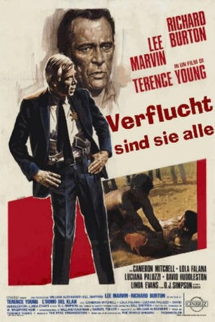

#11067 Verflucht sind sie alle
Alternativ: The Klansman (Englischer Titel)
 
 IMDB-Wertung: 5.1 / 10
IMDB-Wertung: 5.1 / 10  Metascore: 0
Metascore: 0 
In einer kleinen Stadt in Alabama machen sich in den 60er Jahren die Bürgerrechtsbewegung der Farbigen mehr und mehr bemerkbar. Demonstrationen müssen gewährt werden, um die Bürger an die Urne zu bringen. Doch der örtliche Klu-Klux-Klan sieht das gar nicht gern, woraufhin Sheriff Bascomb (Lee Marvin) alle Hände voll zu tun hat, die Gemüter zu beruhigen. Als jedoch ein Schwarzer eine Weiße (Linda Evans) vergewaltigt und die örtlichen Fanatiker wahllos einen Farbigen kastrieren und erschießen, greift dessen Kumpel Garth (O.J.Simpson) zur Selbstjustiz und erledigt die Mörder nacheinander aus dem Hinterhalt. Daraufhin beginnt ein gefährliches Kesseltreiben, dessen Ziel der Farmer Stancill (Richard Burton) ist, der kostenlos Farbige auf seinem Grund leben läßt. Die Wut der rassistischen Kleinbürger ist grenzenlos...
Jahr: 1974
Dauer: 112 Minuten
FSK: 16
Land: USA Studio: Paramount PicturesTonspuren: DD2.0 - ,
Untertitel: Deutsch,
Auflösung: 1080p (1920x1080) Größe: 7833 MB
Genre: Thriller, Drama, Krimi
Regisseur: Terence Young
Drehbuch: William Bradford Huie, Millard Kaufman, Samuel Fuller
Soundtrack: Stu Gardner, Dale O. Warren
Darsteller:
 Lee Marvin als Sheriff Track Bascomb
Lee Marvin als Sheriff Track Bascomb Richard Burton als Breck Stancill
Richard Burton als Breck Stancill Cameron Mitchell als Butt Cutt Cates
Cameron Mitchell als Butt Cutt Cates O.J. Simpson als Garth
O.J. Simpson als Garth- Lola Falana als Loretta Sykes
 David Huddleston als Mayor Hardy Riddle
David Huddleston als Mayor Hardy Riddle- Luciana Paluzzi als Trixie
- Linda Evans als Nancy Poteet
- David Ladd als Flagg
- Wendell Wellman als Alan Bascomb
- Hoke Howell als Bobby Poteet
 Virgil Frye als Johnson
Virgil Frye als Johnson- Robert Porter als Rev. Josh Franklin
 Lee de Broux als Rev. Alverson
Lee de Broux als Rev. Alverson- Morgan Upton als N.Y. Times Reporter
- Susan Brown als Maybelle Bascomb
- Jeannie Bell als Mary Anne
- Scott Edmund Lane als Jim Hodo
 Conrad E. Palmisano als Klansman (uncredited)
Conrad E. Palmisano als Klansman (uncredited)- Ed Call als Shaneyfelt
- John Alderson als Vernon Hodo
- John Pearce als Taggart
- Vic Perrin als Hector
- Spence Wil-Dee als Willy Washington
- Charlie Briggs als A.P. Reporter
- Eve Christopher als Mrs. Martha Shaneyfelt
- Gary L. Catus als Charles Peck
- Jo Ann Cowell als Annie
- Bert Williams als Doctor
- Larry E Wiliams als Lightning Rod
- The Staple Singers als Themselves
- Gene Lehfeldt als Klu Klux Klansman (uncredited)
- Wade Riggs als Hippie Protestor (uncredited)
Datei: X:\1974\Verflucht sind sie alle (1974, FSK16, 1920x1080).mkv seit 24.04.2019
Festplatte: HD 1971-1979
 Es gibt insgesamt 33 Filme in der Gruppe '1974'
Es gibt insgesamt 33 Filme in der Gruppe '1974'